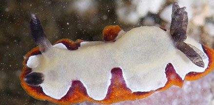
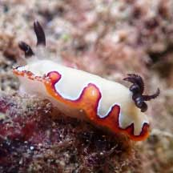
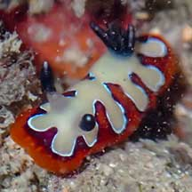
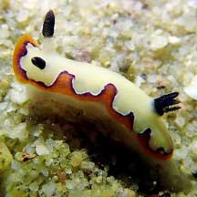
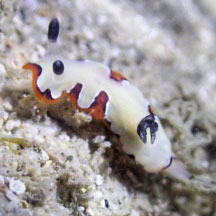
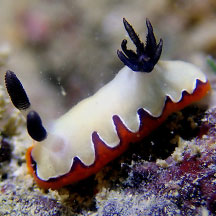
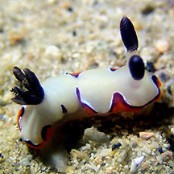
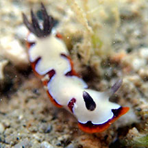
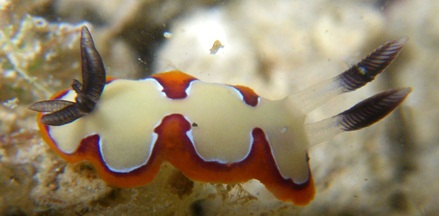

Reliable
nudibranch
Goniobranchus fidelis
Family Chromodoridae
updated
May 2020
Where
seen? This small colourful nudibranch with this distinctive pattern is more
often seen by divers. Sometimes seen on the intertidal. It was previously
known as Chromodoris fidelis.
Features: 1-2cm. Body broad usually
white with typical undulating edge pattern in red. Rhinophores and
gills tipped in black.
What does it eat? Members of the Family Chromodorididae absorb the toxic chemicals in
their sponge food and incorporate these chemicals into the mantle
glands on their backs where they repel predators. |

Pulau Tekukor, May 10
Photo shared by James Koh on flickr. |

Terumbu Pempang Tengah, May 22
Photo shared by Richard Kuah on facebook. |

St. John's Island, Apr 22
Photo shared by Jonathan Tan on facebook.
|

St John's Island, Apr 21
Photo shared by Jianlin Liu on facebook. |

Lazarus Island, Nov 22
Photo shared by Richard Kuah on facebook.
|

Pulau Jong, Jan 23
Photo shared by Jianlin Liu on facebook.
|

Cyrene, Apr 23
Photo shared by Jianlin Liu on facebook. |
|

Terumbu Semakau, May 17
Photo shared by Jianlin Liu on facebook.
|

Terumbu Raya, Mar 09
Photo
shared by Loh Kok Sheng on his
blog. |
Links
References
- Tan Siong
Kiat and Henrietta P. M. Woo, 2010 Preliminary
Checklist of The Molluscs of Singapore (pdf), Raffles
Museum of Biodiversity Research, National University of Singapore.
|
|
|